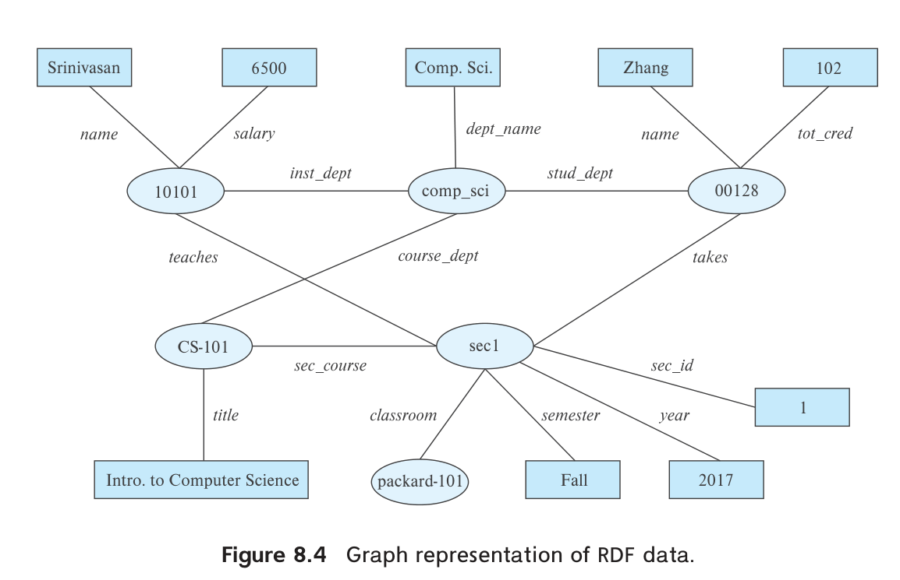
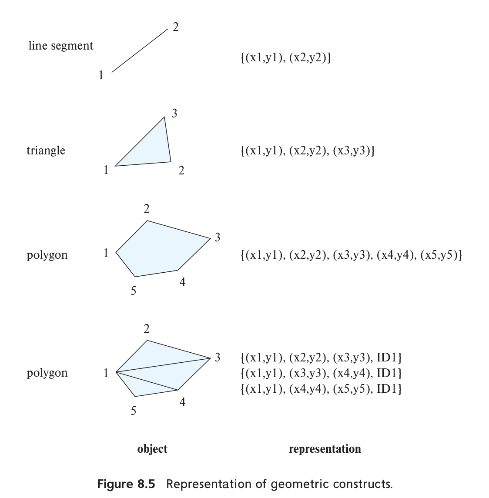
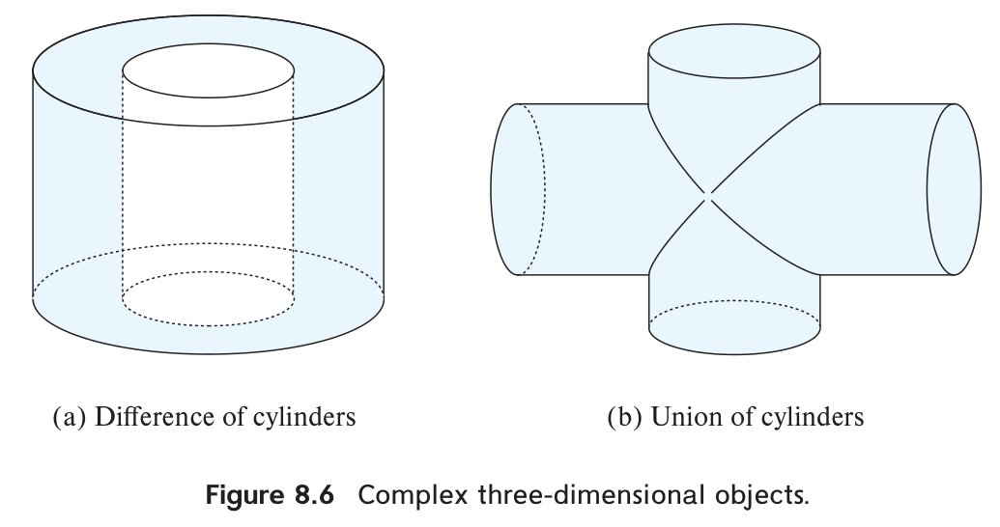
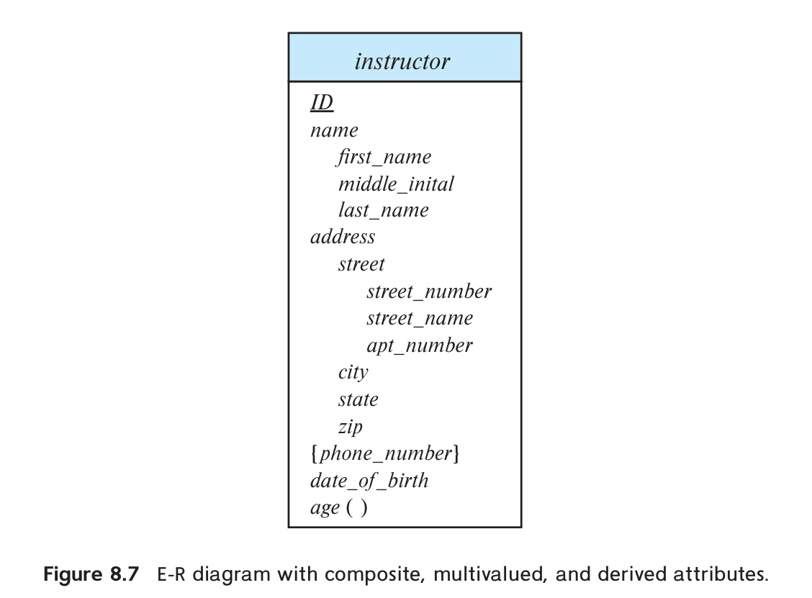
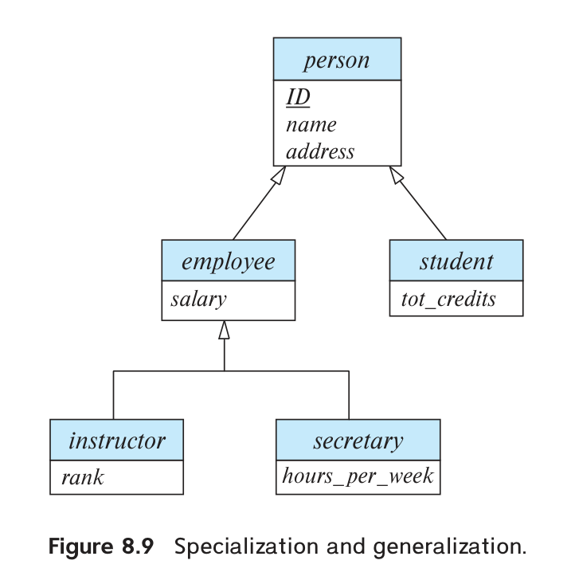

第 8 章 复杂数据类型
关系模型广泛用于各类应用，它的一项基本要求是数据值具有原子性。基本关系模型不允许多值、复合等复杂类型，但在一些应用中，这种限制带来的问题超过了收益。本章介绍常见的非原子类型，包括半结构化数据、基于对象的数据、文本数据和空间数据。
8.1 半结构化数据
关系数据库的表通常有固定数量的属性，每个属性保存原子值。增加属性等模式变更比较少见，变更时还可能需要修改应用代码。这种设计适合许多组织业务。
快速演进的 Web 应用却常需保存更复杂、结构频繁变化的数据。例如，多个应用共享的用户资料可能有许多属性，还经常增加新属性。某些属性自身也很复杂，例如用户兴趣集合，用于推荐相关文章。虽然可以把兴趣放进单独关系并规范化存储，但直接支持集合类型，可能使按用户访问资料更高效。本节介绍这些半结构化数据模型。
数据交换也是采用半结构化表示的重要原因，对许多应用甚至比存储更重要。一种常见架构是由 Web 服务提供数据，客户端负责展示和交互；客户端既可以是移动应用，也可以是在浏览器中运行的 JavaScript。客户端能直接响应交互，改善早期主要由后端生成 HTML 的界面体验。这要求前后端高效交换和处理复杂数据，JSON 与 XML 就广泛用于此。
8.1.1 半结构化数据模型概览
为了满足现代应用的存储与交换需求，关系模型得到了多种扩展。
8.1.1.1 灵活的模式
一些数据库允许不同元组拥有不同属性集合，称为宽列表示（wide column）。属性集合不固定，可以按需增加。
一种限制更多的形式是预先定义大量固定属性，每个元组只使用其中一部分，其余为空，称为稀疏列表示（sparse column）。
8.1.1.2 多值数据类型
许多数据库支持用集合、多重集或数组作为属性值。例如，应用保存用户感兴趣的主题，并据此推荐文章或广告，可以用以下集合。
{ basketball, La Liga, cooking, anime, Jazz }
这些兴趣依次是篮球、西甲、烹饪、动漫和爵士乐。
6.7.2 节介绍过把集合值规范化的方法。但若总是按用户查找兴趣，规范化并无额外好处，还会增加存储和查询开销。
一些系统还支持键值映射（map），即由 (key, value) 组成的集合，每个键至多出现一次。例如，电商商品的品牌、型号、尺寸、颜色及其他规格可能各不相同，适合用规格名作为键、具体内容作为值。
例如：
{ (brand, Apple), (ID, MacBook Air), (size, 13), (color, silver) }
put(key, value) 添加键值对，get(key) 查找值，delete(key) 删除键值对。
数组对科学计算和监测应用很重要。图像是像素值的二维数组；实验和工业传感器按固定间隔产生的读数，也可看作数组。相比为每个读数存储 (time, reading) 元组，数组无需逐项保存可由下标推导的时间，减少元组管理开销，还便于压缩整段读数。
数据库早期就有人提出多值属性，对应模型称为非第一范式模型（NFNF）。Oracle、PostgreSQL 等关系数据库也支持集合、数组等相关类型。
数组数据库专门支持高效压缩数组存储，以及数组操作的查询语言扩展。原书列举 Oracle GeoRaster、PostgreSQL 的 PostGIS 扩展、MonetDB 的 SciQL 扩展，以及面向科学计算、提供多种数组功能的 SciDB。
8.1.1.3 嵌套数据类型
复合属性可以直接对应 E-R 模型：例如 name 含 firstname、lastname。再结合集合、数组、映射，就形成数据类型的层次结构，称为嵌套数据类型。许多数据库把这些能力作为面向对象数据支持的一部分，见 8.2 节。
下面介绍两种常用表示：JavaScript 对象表示法 JSON 和可扩展标记语言 XML。它们允许复杂内部结构，也不要求每个值遵循固定模式。与宽表类似，记录的属性集合及属性类型都可以灵活变化。
此外，对象还可包含子对象，形成树状结构。
JSON、XML 可以把同一业务对象的多方面信息封装在一个结构内，因此广泛用于应用间交换数据。
JSON 常用于移动或 Web 应用的前后端通信，也用于把某个用户的相关信息组织成一个大对象，有时称为“文档”，从而减少检索时的连接操作。XML 出现更早，许多系统用它保存配置等信息，或进行数据交换。
8.1.1.4 知识表示
人工智能领域长期研究如何表示人类知识，包括事实及关于事实的规则。随着 Web 发展，知识库可能包含数十亿条事实。资源描述框架（RDF）因适合处理大规模知识而广泛使用，尽管其表示能力比一些早期模型更简单。
类似 E-R 模型，RDF 把数据看作具有属性、彼此存在联系的对象。它既可以表示成三元组集合，也可以表示成图：对象与属性值为结点，联系与属性名为边。8.1.4 节详细介绍。
8.1.2 JSON
JSON 用文本表示复杂数据，常用于应用间通信及复杂对象存储。它支持数值、字符串、数组，以及由“属性名—值”组成的对象。原书分别提到整数和实数；JSON 的类型体系把二者统称为 number。
图 8.1 是一个例子。对象无需遵守固定模式，可以看作以属性名为键、属性内容为值的映射。
{
"ID": "22222",
"name": {
"firstname": "Albert",
"lastname": "Einstein"
},
"deptname": "Physics",
"children": [
{"firstname": "Hans", "lastname": "Einstein"},
{"firstname": "Eduard", "lastname": "Einstein"}
]
}
图 8.1 JSON 数据示例。
原书 firstname、lastname 的键名漏了闭合引号，此处补齐，使示例为合法 JSON。
方括号表示数组。可从概念上把数组理解为从整数下标到值的映射，方括号是方便的构造语法。
JSON 已成为应用与 Web 服务之间常用的数据表示。许多应用通过 Web 服务在后端存储、检索数据和执行计算。
Web 服务详见 9.5.2 节。简单参数可以是字符串或数字，复杂参数和返回结果则常用 JSON。例如邮件界面通过服务完成身份验证、获取邮件标题列表、读取正文、发送邮件等动作。
这些步骤交换的数据往往有复杂内部结构，JSON 能灵活表示这些内容。
JavaScript、Java、Python、PHP 等语言都有库，可在 JSON 与语言对象之间转换。与程序数据结构容易衔接，是 JSON 广泛使用的重要原因。
相比紧凑的关系存储，JSON 文本重复携带字段名，可能占用更多空间；解析文本获取字段也消耗 CPU。系统因此常使用便于直接访问字段的二进制表示，例如 BSON（Binary JSON）。
原书称 BSON 为“压缩二进制格式”。BSON 是二进制编码，并不保证比 JSON 文本更小；压缩是另一个可独立采用的步骤。
SQL 也从多个方面扩展了 JSON 支持：
- 用 JSON 数据类型存储数据。
- 从关系查询结果生成 JSON。
可以逐行构造对象。例如 PostgreSQL 的 json_build_object('ID', 12345, 'name', 'Einstein') 返回 {"ID": 12345, "name": "Einstein"}。
原书函数参数中漏了逗号，输出示例的 name 后也误用逗号；此处按合法函数调用和 JSON 语法恢复。
也可以聚合多行。PostgreSQL 的 json_agg 把一组值聚合为 JSON 数组；Oracle 提供 JSON_OBJECTAGG 生成对象，JSON_ARRAYAGG 生成数组，并可指定元素顺序。SQL Server 的 FOR JSON AUTO 可把查询结果格式化为 JSON，每行对应一个元素。
原书将 json_agg 的结果笼统称为对象，并把 Oracle 的 JSON_ARRAYAGG 误印为 json_arraytagg；这里按各函数的实际名称与返回结构说明。
- 从 JSON 中提取数据。例如 PostgreSQL 中，JSON 值 v 的
v->'ID'返回 ID 对应的值；Oracle 支持点号路径，SQL Server 用JSON_VALUE(value, path)按路径提取标量。
各系统的语法和语义并不完全一致，详细参考资料见本章在线书目说明。
8.1.3 XML
XML 用尖括号标签标记文本。成对的 <tag>、</tag> 界定内容，例如：
<title>Database System Concepts</title>
关系名与属性名也可作为标签：
<course>
<course_id> CS-101 </course_id>
<title> Intro. to Computer Science </title>
<dept_name> Comp. Sci. </dept_name>
<credits> 4 </credits>
</course>
<purchase_order>
<identifier> P-101 </identifier>
<purchaser>
<name> Cray Z. Coyote </name>
<address> Route 66, Mesa Flats, Arizona 86047, USA </address>
</purchaser>
<supplier>
<name> Acme Supplies </name>
<address> 1 Broadway, New York, NY, USA </address>
</supplier>
<itemlist>
<item>
<identifier> RS1 </identifier>
<description> Atom powered rocket sled </description>
<quantity> 2 </quantity>
<price> 199.95 </price>
</item>
<item>
<identifier> SG2 </identifier>
<description> Superb glue </description>
<quantity> 1 </quantity>
<unit-of-measure> liter </unit-of-measure>
<price> 29.95 </price>
</item>
</itemlist>
<total_cost> 429.85 </total_cost>
<payment_terms> Cash-on-delivery </payment_terms>
<shipping_mode> 1-second-delivery </shipping_mode>
</purchase_order>
图 8.2 采购单的 XML 表示。单据包含买卖双方、商品明细、总价、货到付款条款和配送方式。商品描述依次为原子动力火箭雪橇与强力胶，示例数据保留原文。
新标签很容易增加。命名恰当时，人可以从名称理解或推测内容含义，数据便有一定的自描述性。
标签还可表达嵌套层次，而基本关系模型不能直接表达这种结构。账单、采购单等需要在组织间交换的业务对象很适合这种表示。
图 8.2 展示由一个组织发给另一个组织的采购单。嵌套结构把各种相关信息自然地组合在一个文档中。
真实采购单通常比这个简化示例更复杂。XML 规定统一的标记方式，但双方仍需约定使用哪些标签及其含义。
XQuery 用于查询 XML，详见原书第 30 章。多家厂商提供实现，但普及程度比 SQL 低。
SQL 对 XML 也有扩展：
- 使用 XML 数据类型保存数据。
- 将关系数据生成 XML，可逐行构造，也可用
XMLAGG把多行组合为一个文档，便于把相关数据发给其他应用。 - 从 XML 值中提取内容，例如用 XPath 路径表达式取得指定部分。
这些扩展也见原书第 30 章。
8.1.4 RDF 与知识图谱
资源描述框架（Resource Description Framework，RDF）是表达实体及其属性、联系的数据标准。本节作概览。
8.1.4.1 三元组表示
RDF 用三元组集合表达数据，常见形式是：
(ID, attribute-name, value)；(ID1, relationship-name, ID2)。
ID、ID1、ID2 标识实体，RDF 中也称为资源。RDF 直接表达二元联系，不能像 E-R 模型那样直接表达一般的 n 元联系，后文讨论处理办法。
三元组第一项称为主语（subject），第二项为谓词（predicate），第三项为宾语（object），即 (subject, predicate, object)。
10101 instance-of instructor .
10101 name "Srinivasan" .
10101 salary "6500" .
00128 instance-of student .
00128 name "Zhang" .
00128 tot_cred "102" .
comp_sci instance-of department .
comp_sci dept_name "Comp. Sci." .
biology instance-of department .
CS-101 instance-of course .
CS-101 title "Intro. to Computer Science" .
CS-101 course_dept comp_sci .
sec1 instance-of section .
sec1 sec_course CS-101 .
sec1 sec_id "1" .
sec1 semester "Fall" .
sec1 year "2017" .
sec1 classroom packard-101 .
sec1 time_slot_id "H" .
10101 inst_dept comp_sci .
00128 stud_dept comp_sci .
00128 takes sec1 .
10101 teaches sec1 .
图 8.3 大学数据库中一部分数据的三元组表示。
本章使用便于说明的简写。实际 RDF 序列化与 SPARQL 查询还需使用合法 IRI 或定义命名空间前缀；这些裸名称不能直接当作完整标准语法运行。
图中属性值带引号，实体标识符、属性名和联系名不带引号。
教师、学生以 ID 标识，课程以 course_id 标识；每个属性单独形成三元组。instance-of 给出对象类型，例如 10101 是 instructor，00128 是 student。计算机系用 comp_sci 标识，图中只列出 dept_name 属性。section 的主键是复合键，因此另造标识符 sec1，并列出其学期、年份、班号，以及指向 CS-101 的课程联系。
图中包含 takes、teaches 联系。教师、学生和课程所属的系，分别通过 inst_dept、stud_dept、course_dept 表示；教学班通过 classroom 指向教室对象 packard-101，并通过 sec_course 指向所开设的课程。
instance-of 连接实体与表示类型的对象；类型和子类型之间，也可用 subtype 边连接。
RDF 可以灵活地为对象添加新属性，或增加新的联系类型。
8.1.4.2 RDF 的图表示
把实体和属性值作为结点，属性名或联系名作为有向边的标签，就得到 RDF 图。图 8.4 对应图 8.3：椭圆表示对象，矩形表示属性值，带标签的边表示联系；为简洁省略了 instance-of 边。

图 8.4 RDF 图。name、salary、title 等边连接属性值；takes、teaches、sec_course 等边连接实体。
用 RDF 图或其变体、扩展表达知识，称为知识图谱。它可以收集 Wikipedia、Wikidata 等 Web 来源的事实。例如“华盛顿哥伦比亚特区是美国首都”，可用 capital-of 边连接城市和国家两个实体。
回答“美国首都是哪座城市”时，查找通过 capital-of 指向美国的实体即可。若保存了类型信息，还可检查该实体是否通过 instance-of 连接 City 类型。
8.1.4.3 SPARQL
SPARQL 是 RDF 查询语言，基于允许包含变量的三元组模式。例如：
?cid title "Intro. to Computer Science"
它匹配谓词为 title、宾语为指定课程名的三元组；变量 ?cid 可以匹配任意相应值。
多个模式可以共享变量：
?cid title "Intro. to Computer Science"
?sid sec_course ?cid
在图 8.3 中，第一个模式匹配 (CS-101, title, "Intro. to Computer Science")，第二个匹配 (sec1, sec_course, CS-101)。共享的 ?cid 相当于连接条件。
原书查询把 sec_course 写成 course，与图 8.3 数据不一致；此处统一为 sec_course。
以下查询返回修过“计算机科学导论”某个教学班的学生姓名，仍沿用省略命名空间的简写：
select ?name
where {
?cid title "Intro. to Computer Science" .
?sid sec_course ?cid .
?id takes ?sid .
?id name ?name .
}
共享变量把各个三元组模式的匹配结果连接起来。
SPARQL 的谓词位置也可以是变量，从而匹配不同属性名或联系名。它还支持
聚合、类似外连接的可选匹配，以及子查询，进一步说明见延伸阅读。
8.1.4.4 表示 n 元联系
一条边只能直接表达二元联系，复杂关系需要扩展。例如，为事实附加有效时间：假设美国在 2050 年把首都从华盛顿迁到纽约，就应分别表示截至 2050 年和 2050 年之后的两段事实。这里是说明时间建模的假设情形。
6.9.4 节介绍过，用人工实体代表一个 n 元联系实例，再通过二元联系连接各参与实体。原书另举一例：用 e1 表示“奥巴马在 2008—2016 年任美国总统”，以 person、country 边连接人物与国家，再以 president-from、president-till 属性边连接 2008、2016。若年份也建模为实体，则相应边变为实体间联系。
原书示例年份有误，实际总统任期为 2009—2017，见美国国家档案馆。这里保留原示例数值以说明建模方法，勿将它作为任期资料。
这与 6.8.5 节 E-R 聚集的想法类似：把联系当成实体处理。在 RDF 中称为具体化（reification）。许多知识图谱把有效时间等额外信息作为底层联系的限定信息。
另一类模型为三元组增加第四项上下文（context），形成四元组。基本联系仍是二元的，但可关联一个上下文实体，再把有效时间等信息作为该实体的属性。
Wikidata、DBpedia、Freebase、YAGO 等知识库曾采用 RDF 或知识图谱表达广泛知识，也有大量领域专用图谱。关联开放数据（Linked Open Data）项目推动这些图谱开放，并连接独立建设的图谱，以便综合多个来源及其关联进行查询、推理。更多资料见在线书目说明。
8.2 面向对象
对象关系模型扩展了关系模型的类型系统，支持复杂类型与面向对象特性。
SQL 等关系查询语言也相应扩展，希望保留声明式数据访问等关系基础，同时提高建模能力。
许多应用用 Java、Python、C++ 等面向对象语言编写，却需要从关系数据库存取数据。对象类型与关系类型不一致，每次存取都要转换，单纯扩展数据库类型仍无法完全解决。程序员还要在编程语言与 SQL 之间切换。因此，一些应用希望直接通过语言构造或扩展访问数据库对象。
实践中有三种路线：
- 对象关系数据库：给关系数据库增加面向对象能力。
- 对象关系映射（ORM）：按映射规则，在程序对象和关系存储之间自动转换。
- 面向对象数据库：原生支持对象类型，并允许编程语言直接访问持久对象。
本节简要介绍前两种。第三种在语言衔接上有优势，但原书认为其普及有限：高效数据访问需要声明式查询，而普通命令式语言不直接具备这种能力；此外，经指针直接访问持久对象，指针错误可能扩大数据库损坏的风险。这里不再展开。
8.2.1 对象关系数据库系统
下面概述如何把对象特性加入关系数据库。
8.2.1.1 用户定义类型
SQL 的对象扩展支持结构化用户定义类型、指向该类型的引用，以及以该类型为行类型的表。1
create type Person
(ID varchar(20) primary key,
name varchar(20),
address varchar(20))
ref from(ID);
create table people of Person;
此处及下文的对象 SQL 沿用原书的标准化示意语法，具体数据库的可执行语法与支持范围需分别确认。
可以插入一个人员对象：
insert into people (ID, name, address) values
('12345', 'Srinivasan', '23 Coyote Run');
许多数据库支持数组或表类型，并可在不同位置使用这些类型，但支持范围与语法差异很大。例如 PostgreSQL 的 integer[] 表示未预先限定长度的整数数组，Oracle 的 varray(10) of integer 表示最多包含 10 个整数的数组。原书还给出如下表值类型示例。
create type interest as table (
topic varchar(20),
degree_of_interest int
);
create table users (
ID varchar(20),
name varchar(20),
interests interest
);
原书把这段示例归于 SQL Server。SQL Server 支持用户定义表类型，但不能直接把表类型作为普通表的一列；第二个 CREATE TABLE 应视为嵌套属性的概念示意，不能原样在 SQL Server 中执行。
用户定义类型还可以带方法，Oracle 等部分数据库支持，本节省略细节。
8.2.1.2 类型继承
在 Person、people 基础上，可以为学生和教师保存额外信息。
学生、教师也是人员，可用继承定义：
create type Student under Person
(degree varchar(20));
create type Teacher under Person
(salary integer);
Student、Teacher 继承 Person 的 ID、name、address。前两者称为 Person 的子类型，Person 是它们的超类型。
方法也会继承，子类型还可重新定义方法行为，细节从略。
8.2.1.3 表继承
表继承允许声明子表，对应 E-R 的特化与概化。多种数据库提供相关能力，但实现方式不同。
例如，PostgreSQL 可先建立 people，再声明：
create table students
(degree varchar(20))
inherits (people);
create table teachers
(salary integer)
inherits (people);
原书 INHERITS 后省略了括号，此处按 PostgreSQL 语法补齐。
people 的全部属性也会出现在 students、teachers 中。
SQL:1999 的表继承先要求定义相应类型，原书给出：
create table people of Person;
create table students of Student
under people;
create table teachers of Teacher
under people;
原书称这可直接用于 Oracle，但 Oracle 的对象类型继承与这里的表 UNDER 语法不能混为一谈；本段保留为 SQL 标准模型示意。
其中 Student、Teacher 已按前文声明为 Person 的子类型。
向学生子表插入时，同时提供继承属性和本地属性：
insert into students values
('00128', 'Zhang', '235 Coyote Run', 'Ph.D.');
原书此处表名误用单数 student，前文建表名为 students。
子表中的元组隐式属于父表。查询 people 时，也会查到 students、teachers 的元组，但只能访问 people 中定义的属性。若只要直接存于父表、不含子表的元组，可使用 only people。
8.2.1.4 SQL 中的引用类型
Oracle 等一些系统支持引用类型。原书继续使用如下 Person 定义说明引用概念。
create type Person
(ID varchar(20) primary key,
name varchar(20),
address varchar(20))
ref from(ID);
create table people of Person;
引用可使用系统分配的标识符；示意语法中的 ref from(ID) 则要求以已有主键值构造引用。
定义 Department，其 head 引用 Person，再创建 departments 表：
create type Department (
dept_name varchar(20),
head ref(Person) scope people
);
create table departments of Department;
scope people 将引用的目标表限定为 people。原书把它描述为完成外键定义；具体实现中，限定引用范围与保证引用目标存在并非同一件事，例如 Oracle 的 scoped REF 仍可能悬空，需要另外的引用完整性约束。
在按 ID 构造引用的示例模型下，可以写：
insert into departments values ('CS', '12345');
这里 12345 作为 Person 的引用。若由系统生成对象标识符，可以在查询中通过 ref(r) 取得引用，r 是表名或别名。先创建人员，再按 ID 或姓名查出引用，赋给 head。原书用下面两步示范，以避免依赖 VALUES 中的子查询支持。
insert into departments values ('CS', null);
update departments
set head = (select ref(p)
from people as p
where ID = '12345')
where dept_name = 'CS';
SQL:1999 用 -> 解除引用，例如查询各系负责人的姓名和地址：
select head->name, head->address
from departments;
head->name 称为路径表达式。
head 指向 people 的元组，因此访问的是该人员的 name。引用把连接操作隐藏起来：若 head 只是普通外键，取得负责人姓名和地址就要显式连接 departments、people。
也可用 deref 取得引用指向的元组，再访问属性：
select deref(head).name
from departments;
8.2.2 对象关系映射
ORM 允许程序员定义数据库关系中的元组与程序对象之间的映射。
程序可以按属性条件检索一个或多个对象。ORM 把条件转换为数据库查询，再根据预先定义的映射，将结果构造成对象。
程序修改对象、创建对象或标记删除后，发出保存命令，ORM 再把变化转换成对应元组的更新、插入、删除。
ORM 让程序员面向对象编写应用，同时保留底层关系数据库的能力。若对象已经缓存在内存中，访问它们还可能比反复查询数据库更快。
ORM 通常也提供针对对象模型的查询语言，并把查询转换为 SQL，再从 SQL 结果建立对象。
它还能隐藏不同数据库间的一些 SQL 差异，使同一套高层代码适配多个数据库，降低迁移成本。直接依赖特定 SQL 的应用，在迁移时通常需要处理更多差异。
代价是批量更新、或用命令式代码表达复杂查询时，ORM 可能效率较低。发现瓶颈后，可以绕过 ORM 直接操作数据库，用 SQL 编写复杂查询。
对许多应用，ORM 的便利超过这些代价，因此得到广泛采用。Java 中的 Hibernate，以及 Python 中的 Django ORM、SQLAlchemy 都是例子。9.6.2 节进一步介绍 Hibernate、Django。
8.3 文本数据
文本数据由非结构化文字组成，查询这类数据通常称为信息检索。传统模型以文档组织文字：数据库中的一个文本属性可视为文档，Web 上的一个网页也可视为文档。
8.3.1 关键词查询
信息检索系统根据关键词查找所需文档。例如 database system 查数据库系统资料，stock、scandal 查股市丑闻文章。通常文档中的所有词都可作为候选关键词，查询寻找包含指定关键词的文档。
最简单的系统返回包含全部查询词的文档；更复杂的系统结合词语出现情况、超链接等信息估计相关性，并按估计得分排序。
关键词检索最初用于组织内部文档库、研究论文等专业资料库，也适用于数据库保存的文本。
视频、音频、图片也可以通过描述性关键词检索。例如电影的标题、导演、演员、类型，或图片、短视频的内容标签。
Web 搜索引擎通过爬虫收集网页，再由检索系统匹配用户关键词。搜索引擎还会判断用户关心的主题，展示网页之外的信息：搜索 cricket 可看到板球比赛比分，搜索 New York 可看到地图、图片及相关网页。
8.3.2 相关性排序
Web 包含数十亿文档，一次查询可能匹配几十万条结果，相关程度却不相同。因此，系统估计相关性，优先返回排名高的结果。相关性没有唯一精确标准，但已有一些常用方法。
8.3.2.1 TF–IDF 排序
词项（term）指文档或查询中的关键词。给定词项 t 与文档 d，可以先考察 t 在 d 中出现多少次：相关词往往多次出现。但直接计数有两个问题，一是长文档天然可能出现更多次，二是出现 10 次不意味着相关性就是出现 1 次的 10 倍。
一种计算 TF(d, t) 的方式是：
TF(d, t) = log(1 + n(d, t) / n(d))
其中 n(d) 是文档中的词项总次数，n(d, t) 是 t 的出现次数。这个式子考虑文档长度，得分随出现次数增加，但不按次数线性增长。
还可加入位置等信息：词项出现在标题、作者列表或摘要中，通常权重更高；首次出现在文档前部，可能比很晚才出现更相关。无论具体公式如何，这类描述词项在文档中重要程度的指标都称为词频（TF）。
多词查询可合并各词得分，例如求和，但不同词的信息量不同。database 很常见，Silberschatz 较少见；同时搜索两词时，只包含 Silberschatz 的文档，可能比只包含 database 的文档更有辨识力。
为此引入逆文档频率（IDF）。本书采用如下简单定义：
IDF(t) = 1 / n(t)
n(t) 是系统索引中包含 t 的文档数量。于是，文档 d 相对于查询词集合 Q 的相关性为：
r(d, Q) = ∑t∈Q TF(d, t) × IDF(t)
若允许用户为查询词指定权重 w(t)，可在每个求和项中再乘 w(t)。
综合词频和逆文档频率的方法称为 TF–IDF。
英语中的 and、or、a 等词几乎处处可见，逆文档频率很低，通常难以帮助区分文档。传统系统常定义约一百个常用停用词，建索引时忽略，用户查询中出现时也丢弃。
多词查询还可考虑词项在文档中的距离：彼此靠近通常比相距很远更相关，可把邻近性加入评分公式。
系统按 r(d, Q) 降序返回结果。匹配文档很多时，先给出得分最高的一小部分，用户再按需查看更多。
8.3.2.2 利用超链接排序
超链接可以衡量与具体查询无关的文档整体重要性，例如被许多页面链接的文档通常更重要。
Google 推广的 PageRank 根据链接来源页面的重要程度计算目标页面的重要程度。原书认为，这种改进后的排序效果是 Google 早期迅速普及的重要原因。
被许多页面指向的页面更可能被访问；被高 PageRank 页面指向，也应获得更高分数。
因此，某页面的 PageRank 由其他页面的 PageRank 递归定义，可以写成线性方程组。先给网页编整数编号，并定义跳转概率矩阵 T：T[i, j] 表示随机访问者从 i 沿链接转到 j 的概率。
假设 i 的每条出链被选中的概率相同，若 i 有 Nᵢ 条出链，则对相连页面 j 有 T[i, j] = 1/Nᵢ。页面 j 的分数为：
P[j] = δ/N + (1 − δ) × ∑i=1N (T[i, j] × P[i])
N 是总页面数，δ 在 0 与 1 之间，通常取 0.15。
常用迭代求解：所有 P[i] 先设为 1/N，每轮用上一轮的分数计算新分数；当一轮中任意 P[i] 的最大变化低于阈值时停止。
PageRank 是与查询无关的静态指标，实际回答关键词查询时，可与文档的 TF–IDF 得分结合。
排序还可使用网站访问频率、结果展示后的点击率等信号。指向页面的链接锚文本中的关键词，也常赋予较高权重。这些因素共同决定查询结果顺序。
8.3.3 衡量检索效果
常用两个指标：精确率（precision）是返回文档中真正相关的比例；召回率（recall）是全部相关文档中被找回的比例。用户通常只看前 10 或 20 条，因此常计算前 K 条结果上的指标，记作 precision@K、recall@K，例如 precision@10、recall@20。
8.3.4 结构化数据与知识图谱上的关键词查询
SQL 等语言适合查询结构化数据，但不熟悉模式或查询语言的用户难以使用。因此，研究者把关键词搜索扩展到结构化、半结构化数据。
一种办法是先将数据建模成图：元组为结点，外键等联系为边。查询先找到包含关键词的元组，再寻找这些结点之间的连接路径。
例如，在大学数据库中搜索“Zhang Katz”，可以找到学生 Zhang、教师 Katz，并通过 advisor 关系连接二者；也可能找到“Zhang 修了 Katz 教的课”这样的路径。用户不必知道精确模式或编写 SQL，就能临时浏览、查找关联信息。对普通用户，关键词通常比结构化查询语言更自然。
由于关键词没有完整限定查询含义，系统可能找到多类答案，必须排序。研究方法包括根据路径长度、边方向和权重评分，也可根据外键链接估计元组重要性。更多资料见在线书目。
知识图谱还可以与文本结合。先用图谱中的唯一实体标识符标注文本里的实体提及。例如“Stonebraker developed PostgreSQL”中的 Stonebraker，可据上下文链接到 Michael Stonebraker；图谱另存有他获得图灵奖的事实。于是，“turing award postgresql”可以综合文本与图谱的信息得到答案。2
Web 搜索引擎也会结合大规模知识图谱与抓取的文档回答查询。
8.4 空间数据
数据库的空间支持，用于按位置高效存储、建立索引和查询数据。
两类空间数据很重要：
- 地理数据：道路、土地利用、地形高程、行政边界、土地权属等地图信息。地理信息系统（GIS）专门处理这类数据，通常使用经度、纬度、高程等地球坐标。
- 几何数据：描述建筑、汽车、飞机等物体的形状与结构，通常使用二维或三维欧氏空间中的 X、Y、Z 坐标。
原书列举的支持系统包括 Oracle Spatial and Graph、PostgreSQL 的 PostGIS、SQL Server，以及 IBM DB2 Spatial Extender。
本节介绍建模和查询，索引与查询处理技术见第 14、15 章。
具体语法因系统而异，越来越多实现采用开放地理空间联盟 OGC 的标准表示，使用时应查相应数据库手册。
8.4.1 几何信息的表示
几何信息可以用多种方式存储，图 8.5 展示其中一些规范化表示。
线段可用两个端点的坐标表示，例如地图上的经纬度。折线（polyline，也称 linestring）是首尾相接的线段序列，可按顺序保存端点坐标。任意曲线都可分段近似成折线。地图比例较小时，道路宽度可以忽略，适合表示成线；某些系统还以圆弧为基本元素，用一系列弧段表示曲线。
多边形可按顺序列出顶点，顶点序列确定区域边界。3 也可把多边形划分为若干三角形，称为三角剖分；每个三角形携带所属多边形的标识符。圆、椭圆可使用专门类型，也可用多边形近似。
折线、多边形的列表表示便于查询，但属于非第一范式。若需要固定长度的第一范式元组，可给折线或曲线分配标识符，每条线段单独存为元组，并带上所属曲线标识符。多边形的三角剖分也可类似存为第一范式关系。

图 8.5 依次为线段、三角形、多边形顶点序列，以及携带同一 ID 的三角剖分。左列为对象，右列为坐标表示。
三维点、线段只需多一个 z 坐标。三角形、矩形等平面图形在三维中的表示也相近。四面体、长方体可类比三角形、矩形表示；任意多面体可以划分为四面体，或列出组成其边界的多边形面，并标明每个面的哪一侧属于内部。
例如，SQL Server、PostGIS 提供 geometry、geography 及相关几何子类型，包括 point、linestring、curve、polygon，以及 multipoint、multilinestring、multicurve、multipolygon 等集合类型。具体类型与操作的支持范围因系统而异。
OGC 定义了文本表示，例如 LINESTRING(1 1, 2 3, 4 4) 连接三个点，POLYGON((1 1, 2 3, 4 4, 1 1)) 用闭合坐标序列表示三角形。可以用转换函数构造内部对象；原书列出 ST_GeometryFromText()、ST_GeographyFromText()。ST_Union()、ST_Intersection() 分别计算并集和交集，返回相应空间对象。实际函数名称和语法需按系统确认。
道路线段通常还相互连接，构成空间网络或空间图。图的顶点有空间位置，边表示连接，并可携带距离、车道数、一天中不同时段的平均速度等信息。
8.4.2 设计数据库
传统计算机辅助设计（CAD）工具在编辑时把数据放在内存，会话结束再写文件。这既有格式转换的编程与时间成本，也常需整份读取文件。大型集成电路、整架飞机等设计甚至无法全部装入内存。CAD 需求曾是面向对象数据库的重要动机：把设计部件表示成对象，通过对象间联系表达整体结构。
设计数据库保存的通常是几何对象。点、线、三角形、矩形、多边形等简单二维对象，可通过并、交、差组合成复杂对象；三维对象也可由球、圆柱、长方体等组合，如图 8.6。表面还可以用线框或网格模型表达，以线段、三角形、矩形等简单元素近似。

图 8.6 (a) 两个圆柱的差；(b) 两个圆柱的并。
设计数据库还保存材质等非空间属性，这些可以使用通常的数据建模方法，本节只讨论空间部分。
设计操作可能要求取出某个区域中的部分对象，14.10.1 节的空间索引适用于此。这类索引面向二维、三维空间，不局限于普通 B⁺ 树的一维顺序。
设计还需空间完整性约束，例如两根管道不能占据同一位置，以避免干涉。人工设计中的此类错误可能到制作原型时才发现，修复成本高。数据库提前检查空间约束可减少错误，也依赖高效的多维索引。
8.4.3 地理数据
地图和卫星影像是典型地理数据。它们既可记录边界、河流、道路的位置，还可附带高程、土壤类型、土地用途、年降雨量等信息。
8.4.3.1 地理数据的应用
地理数据库用于在线地图、导航，也用于电话、电力、供水等公用设施网络，以及生态和城市规划所需的土地利用、土地权属记录等。
地下电缆、管道越来越多，详细地图可以避免一个单位施工时破坏另一个单位的设施，造成大范围中断。地理数据库结合 GPS 等精确定位，有助于防止这些问题。
8.4.3.2 地理数据的表示
主要分为两类。
栅格数据（raster）是二维或更高维的像素网格，例如某区域的卫星影像。除了图像，还保存位置，例如四角经纬度，以及分辨率；分辨率可用像素总数，也常用每个像素覆盖的地面范围表示。
栅格常按固定范围划成瓦片。显示一个区域时，加载所有与之重叠的瓦片。不同缩放级别各有一套瓦片，界面确定级别后只取相应区域与级别的数据。
栅格也可以是三维，例如各区域、各高度的温度；时间还可作为额外维度，记录地表温度随时间的变化。
矢量数据（vector）由点、线段、折线、三角形、多边形等二维对象，或圆柱、球、长方体、多面体等三维对象构成。地理点通常用经纬度表示，必要时加入高程。
道路常用折线，大湖、州、国家等区域用复杂多边形；河流根据宽度是否重要，可表示成曲线或多边形。区域年降雨量也可保存成数组，即栅格，并压缩节省空间。原书还提到用四叉树作为另一种数组表示。
区域信息也可按相同数值划成多边形。某些应用中，矢量更紧凑，表示道路时也比大像素网格更精确。但卫星影像等天然基于像素的数据，通常不适合强行转成矢量。
地形信息描述各点高程，可用栅格；也可划成近似等高的多边形，每区附一个高度。另一种方法是对地表进行三角剖分，每个三角形顶点都有经纬度和高程，称为不规则三角网（TIN）。这种表示较紧凑，便于生成区域三维视图。
GIS 往往同时保存栅格和矢量，并叠加显示。例如卫星影像上叠加道路、建筑和地标。地图由多个图层组成，按从下到上的顺序绘制，上层覆盖下层。
有时矢量在发送到浏览器前会先转成栅格：这样即使禁用 JavaScript 也能显示，也可减少直接向终端提供可提取的矢量数据。
Google Maps、Bing Maps 等服务提供 API，让应用在基础地图上叠加自己的信息，例如餐馆位置；可以动态只显示某种菜系，也可支持缩放、平移。
8.4.4 空间查询
按位置查询有多种形式。
区域查询查找全部或部分位于指定范围内的对象，例如某城镇边界内的商店。PostGIS 提供 ST_Contains()、ST_Overlaps()，以及 ST_Disjoint()、ST_Touches() 等空间关系判断；SQL Server 有对应操作但命名不同。若 shop.location 为点，给定一个多边形，可判断哪些商店位于其中。
原书把这些函数笼统描述为同时用于 geometry 与 geography。PostGIS 各函数的类型支持不同，ST_Contains 直接接受 geometry；涉及 geography 时需选用该类型支持的函数，例如 ST_Covers，并注意边界语义差异。
邻近查询寻找距指定位置一定距离内的对象，例如附近餐馆。最近邻查询找最近对象，例如最近加油站，无需预先知道距离上限。
ST_Distance() 返回对象间的最小距离，可据此查找指定距离内的对象，或取距离最小者。
空间图查询在道路、铁路等网络上查询路径，例如两个位置之间的最短路线，是导航系统的常见操作。
计算两个区域集合的交集，可以看作空间连接。例如一个关系表示降雨，另一个表示人口密度，空间位置充当连接依据。一般来说，空间连接返回相交对象对，或这些对象对的相交区域；ST_Contains()、ST_Overlaps() 等可以作为连接条件。
空间与非空间条件也可组合，例如查找最近一家提供素食、每餐低于 10 美元的餐馆。
8.5 小结
- 许多应用需要比固定属性表更复杂的数据表示。
- SQL 的类型与查询扩展加入集合值属性、继承和元组引用，在保留声明式访问的同时扩展建模能力。
- 半结构化数据允许复杂内容和经常变化的模式。Web 服务提供数据、客户端负责显示和交互，是一种常见应用架构。
- 关系模型的扩展包括：不同元组具有不同属性集合；属性保存非原子值；用结构化属性直接对应 E-R 复合属性。
- JSON 是复杂数据的文本表示，广泛用于应用通信与存储。XML 也允许灵活的属性集合、类型与嵌套结构。
- RDF 用实体、属性和联系表达数据，可解释为以实体及属性值为结点、以属性及联系为边的图。SPARQL 基于三元组模式查询 RDF。
- 对象特性包括子类型、子表继承和对象引用。对象关系模型提供集合类型等更丰富的类型系统，为关系数据库用户采用对象特性提供迁移路径。
- ORM 把关系数据映射为程序对象。对象按需从数据库构造，修改再映射回关系；程序对象本身的内存身份不会像持久对象指针那样长期保存。ORM 得到了比持久化编程语言更广泛的应用。
- 信息检索系统保存、查询文本，模型较简单，但在该模型内提供丰富检索能力。用户的关键词往往无法完全表达需求，因此系统按潜在相关性排序。
- 排序依据包括词频、逆文档频率和重要性评分。
- 空间数据包括几何与地理类型，常用点、折线、多边形表示；区域、最近邻和空间图查询是常见查询形式。
复习术语
- 宽列、稀疏列
- 键值映射、映射
- 数组数据库
- 标签
- 三元组、资源、主语、谓词、宾语
- 知识图谱、具体化、四元组、关联开放数据
- 对象关系数据模型、对象关系数据库系统、对象关系映射
- 面向对象数据库系统
- 路径表达式
- 关键词、关键词查询、词项、相关性
- TF–IDF、停用词、邻近性、PageRank
- 精确率、召回率
- 地理数据、几何数据、地理信息系统
- 计算机辅助设计（CAD）
- 折线（polyline、linestring）
- 三角剖分、空间网络、空间图
- 栅格数据、瓦片、矢量数据、地形信息
- 不规则三角网（TIN）、叠加图层
- 邻近查询、最近邻查询、区域查询、空间图查询、空间连接
练习
8.1 取大学样例数据库中 Shankar 的信息，包括其 student 元组、对应 takes 元组，以及相关 course 元组，分别表示为：
a. 适当嵌套的 JSON；
b. 相同嵌套结构的 XML；
c. RDF 三元组；
d. RDF 图。
8.2 根据图 8.3 的 RDF 数据，用 SPARQL 查询：
a. 所有名为 Zhang 的学生修过的课程名称。
b. Zhang 修过、且相应教学班由 Srinivasan 授课的课程名称。
c. Srinivasan 的全部属性名与属性值，查询中不得逐个列举属性名。
8.3 租车公司为所有车辆保存车辆识别号、车牌号、制造商、型号、购买日期、颜色；某些类别还有特有属性：
- 卡车：载货能力。
- 跑车：马力、租车人年龄要求。
- 厢式车：乘员数。
- 越野车：离地间隙、四驱或两驱。
为该数据库定义 SQL 模式，并在适当位置使用继承。
8.4 考虑以下包含多值属性的模式：
Emp = (ename, ChildrenSet multiset(Children), SkillSet multiset(Skills))
Children = (name, birthday)
Skills = (type, ExamSet setof(Exams))
Exams = (year, city)
按 8.2.1.1 节的表类型示意，为多重集属性定义 SQL 模式。
原题要求使用 SQL Server 的表类型语法；如前文所注，SQL Server 不支持把用户定义表类型直接嵌入为列。本题应作为嵌套类型建模题理解；在 SQL Server 实现时需转换为相应子表。
8.5 对图 8.7 的 instructor 实体，给出 SQL 模式定义；用 Oracle 或 PostgreSQL 的数组语法，将 phone_number 表示为最多 10 个元素的数组。
PostgreSQL 的数组声明不会强制长度上限；若要求最多 10 项，还需 CHECK 等约束。参见数组类型文档。

图 8.7 教师的姓名、地址为复合属性，电话为多值属性，年龄由出生日期推导。图中 middle_inital 是原图的拼写。
8.6 考虑图 8.8 的关系模式。
a. 定义相应 SQL 模式，用引用表示外键联系。
b. 编写以下查询：
i. 雇员最多的公司。
employee (person_name, street, city)
works (person_name, company_name, salary)
company (company_name, city)
manages (person_name, manager_name)
图 8.8 练习 8.6 的关系模式。原图中各关系下划线主键依次为 employee.person_name、works.person_name、company.company_name、manages.person_name。
ii. 工资总额最小的公司。
iii. 雇员平均工资高于 First Bank Corporation 平均工资的公司。
8.7 选择适当的 TF、IDF 定义，计算本章各道练习对查询“SQL relation”的相关性。
8.8 把 PageRank 使用的矩阵表示为关系，再用 SQL 实现一次迭代。整个算法可由包含该查询的循环实现。
8.9 student.location 为点，classroom.location 为多边形。用前述 PostGIS 函数编写查询：
a. 位于 Packard 101 教室内的学生姓名。
b. 距 Packard 101 不超过 100 米的全部教室，假设距离单位均为米。
c. 距 ID 为 12345 的学生最近的另一名学生的 ID、姓名。
d. 相距小于 200 米的所有学生对的 ID、姓名。
习题
8.10 将练习 8.4 的数据库分别重新设计为第一范式与第四范式。列出假设的函数依赖、多值依赖，以及两个模式中应有的全部参照完整性约束。
8.11 对 8.2.1.3 节的 people 及其 students、teachers 子表，设计表达相同信息的第三范式关系模式。结合子表约束，列出所需的全部约束，使关系模式的每个合法实例也能由继承模式表示。
8.12 对图 8.9 的 E-R 图，使用子类型、子表回答：
a. 给出 SQL 模式。
b. 查询所有非秘书人员的姓名。
c. 查询既非雇员、也非学生的人员姓名。
d. 你的模式能否表示同时是雇员和学生的人？说明做法或不能表示的原因。

图 8.9 person 特化为 employee 和 student；employee 再特化为 instructor、secretary。不同类型分别附带工资、学分、职级、每周工时等属性。
8.13 对一组元组进行关键词查询，每个元组只有少量属性，每个属性只有几个词。TF 在这种情形中是否有意义？IDF 呢？说明理由，并给出基于 TF–IDF 定义两个元组相似度的方法。
8.14 一些网站通过互相链接组成“链接环”，以换取曝光。
这种做法会怎样影响 PageRank 等重要性排序？
8.15 Google 提供按网页内容投放广告的服务。给定网页内容，说明可能如何选择合适广告。
延伸阅读
原书推荐 W3Schools 的 JSON 入门。XML 进一步内容见在线第 30 章；RDF 可参阅 W3C RDF。Apache Jena 提供 RDF 与 SPARQL 实现，其网站有 SPARQL 教程。
POSTGRES 是早期对象关系系统，见 Stonebraker 与 Rowe（1986）、Stonebraker（1986）。原书比较了 Oracle 和 PostgreSQL 的对象关系特性，实际支持范围可查各自手册。
Salton（1989）是较早的信息检索教材，Manning 等（2008）是后来的系统性教材。Oracle、PostgreSQL、SQL Server 的空间数据支持可查在线手册。
参考文献
- [Manning et al. (2008)] C. D. Manning, P. Raghavan, and H. Schütze, Introduction to Information Retrieval, Cambridge University Press (2008). 题名译文：信息检索导论。
- [Salton (1989)] G. Salton, Automatic Text Processing, Addison Wesley (1989). 题名译文：自动文本处理。
- [Stonebraker (1986)] M. Stonebraker, “Inclusion of New Types in Relational Database Systems”, In Proc. of the International Conf. on Data Engineering (1986), pages 262–269. 题名译文：在关系数据库系统中加入新类型。
- [Stonebraker and Rowe (1986)] M. Stonebraker and L. Rowe, “The Design of POSTGRES”, In Proc. of the ACM SIGMOD Conf. on Management of Data (1986), pages 340–355. 题名译文：POSTGRES 的设计。
图片署名
本章开篇的帆船照片：© Pavel Nesvadba / Shutterstock。